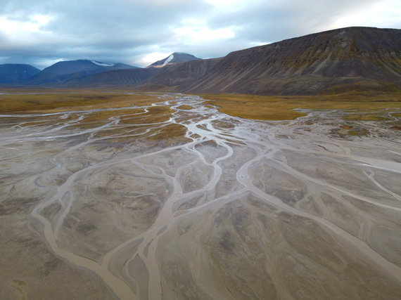

Svalbardas
Pradžia
Pasakojimai
Galerija
Patarimai
Apie mus
Susisiekti
Pasakojimai
Pirma dalis. Longjyrbienas, Nordenskiold ledynas, Barentsburgas

Antra dalis. Žygis nuo Barentsburgo į Longjyrbieną
Trečia dalis. Longjyrbienas, Piramidė